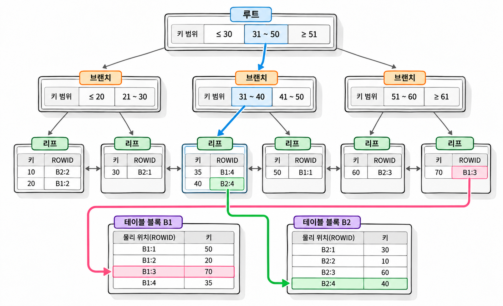
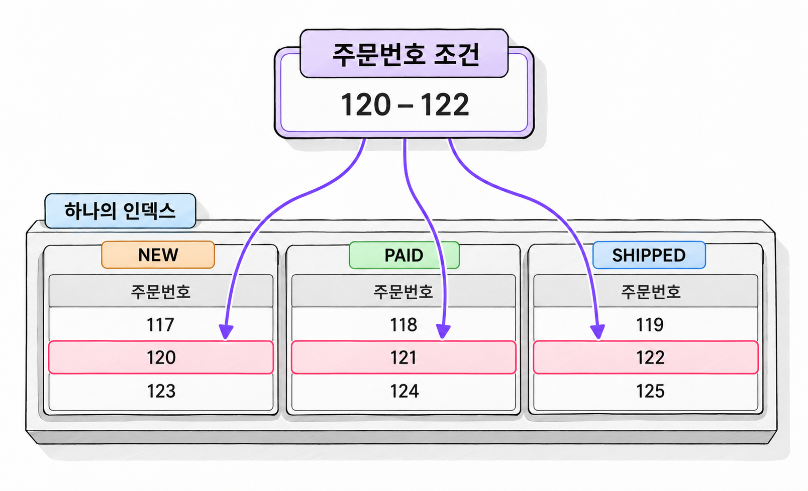

12장. B-tree 인덱스와 스캔 방식이란?
1. B-tree 인덱스의 구조
1.1 루트·브랜치·리프와 키 정렬
B-tree 인덱스(B-tree index)는 키 값을 정렬하고, 키 범위에 따라 탐색 경로를 나누는 균형 트리 구조입니다. 균형이란 루트에서 어느 리프까지 내려가더라도 거치는 단계 수가 같다는 뜻입니다.
이 장에서는 일반적인 힙 테이블에 만든 오름차순 B-tree 인덱스를 기준으로 설명합니다. 테이블과 인덱스는 별도의 세그먼트에 저장됩니다. 인덱스를 만들어도 테이블 행이 인덱스 키 순서로 재배치되지는 않습니다.
B-tree 인덱스의 블록은 다음 역할을 맡습니다.
| 구성 | 역할 |
|---|---|
| 루트(root) | 탐색을 시작하고 하위 블록으로 가는 경로를 결정합니다. |
| 브랜치(branch) | 키 범위를 구분하여 다음 하위 블록으로 안내합니다. |
| 리프(leaf) | 인덱스 키와 테이블 행을 찾는 ROWID를 저장합니다. |
작은 인덱스에서는 루트 블록이 리프 역할도 맡습니다. 데이터가 늘어나면 하위 블록과 브랜치 단계가 추가될 수 있습니다.
리프의 항목은 키 순서로 정렬됩니다. 인접한 리프 블록은 양방향으로 연결되어 있어 앞이나 뒤로 이어 읽을 수 있습니다. 비유일 인덱스에는 같은 키 값을 가진 항목이 여러 개 저장됩니다. 이때 ROWID도 정렬에 사용합니다. Oracle Database Concepts

그림 12-1에서 정렬되어 있는 것은 인덱스의 키입니다. 테이블 블록의 행까지 같은 순서로 배치된다는 뜻은 아닙니다. 이 차이 때문에 인덱스를 적게 읽고도 테이블을 많이 읽는 실행이 생길 수 있습니다.
1.2 수직 탐색·수평 탐색·ROWID 접근
인덱스로 주문번호의 일정 구간을 조회한다고 가정하겠습니다. 이때 작업은 수직 탐색, 수평 탐색, ROWID 접근으로 구분합니다.
수직 탐색(vertical traversal)은 루트에서 시작해 조건에 맞는 리프 위치를 찾는 과정입니다. 각 블록에서 키 범위를 비교하고 다음 하위 블록을 선택합니다. 모든 리프를 처음부터 읽지는 않습니다.
수평 탐색(horizontal traversal)은 시작 위치부터 리프의 항목을 키 순서로 읽는 과정입니다. 현재 리프에서 탐색이 끝나지 않으면 연결된 다음 리프로 이동합니다. 조건의 상한을 넘으면 범위 탐색을 마칩니다.
리프에서 찾은 ROWID는 테이블 행에 접근할 때 사용합니다. 조회에 필요한 컬럼이 인덱스에 없다면 해당 ROWID로 테이블 블록을 읽습니다.
| 작업 | 찾거나 읽는 대상 |
|---|---|
| 수직 탐색 | 조건에 맞는 리프의 시작 위치 |
| 수평 탐색 | 조건 범위의 인덱스 항목 |
| ROWID 접근 | 인덱스에 없는 컬럼을 가진 테이블 행 |
인덱스가 주문번호만 저장한다고 가정하겠습니다. 주문번호만 조회하면 인덱스에서 결과를 만들 수 있습니다. 배송지까지 조회하려면 테이블 행도 읽어야 합니다.
인덱스 접근 비용은 트리를 내려가는 비용만으로 설명할 수 없습니다. 리프를 얼마나 읽는지, 테이블에 얼마나 접근하는지도 함께 봐야 합니다.
1.3 복합키와 NULL 저장 규칙
복합 인덱스(composite index)는 둘 이상의 컬럼을 키로 사용하는 인덱스입니다. (주문상태, 주문번호) 순서로 만들면 주문상태를 먼저 비교합니다. 주문상태가 같은 항목 안에서 주문번호를 비교합니다.
| 주문상태 | 주문번호 |
|---|---|
| NEW | 1001 |
| NEW | 1004 |
| NEW | 1010 |
| PAID | 1002 |
| PAID | 1003 |
이 인덱스에서 주문번호 전체가 작은 값부터 정렬되는 것은 아닙니다. NEW 구간과 PAID 구간 각각에서 주문번호가 정렬됩니다. 인덱스의 첫 번째 컬럼을 선두 컬럼(leading column)이라고 합니다.
일반적인 오름차순 B-tree 인덱스는 키 컬럼이 모두 NULL인 행을 저장하지 않습니다. 복합키 중 하나라도 NULL이 아니면 그 행의 항목을 저장합니다.
| 인덱스 키 | 행의 값 | 항목 저장 |
|---|---|---|
(취소사유) | NULL | 저장하지 않음 |
(주문상태, 취소사유) | ('NEW', NULL) | 저장함 |
(주문상태, 취소사유) | (NULL, 'CUSTOMER') | 저장함 |
(주문상태, 취소사유) | (NULL, NULL) | 저장하지 않음 |
따라서 NULL을 허용하는 단일 컬럼 인덱스에는 테이블의 모든 행이 들어 있지 않을 수 있습니다. 그 인덱스만 읽어서 테이블 전체 행 수를 세면 NULL인 행을 빠뜨리게 됩니다.
반면 복합 인덱스에 NOT NULL 컬럼이 포함되어 있으면 모든 행이 인덱스에 저장됩니다. 인덱스만으로 쿼리를 실행할 수 있는지 판단할 때는 필요한 컬럼을 확인합니다. 필요한 행이 빠짐없이 저장되어 있는지도 함께 확인합니다.
2. 인덱스 스캔 방식
2.1 Index Unique Scan·Index Range Scan
Index Unique Scan은 유일 인덱스의 키 전체에 동등 조건을 적용하여 최대 한 행의 ROWID를 찾는 방식입니다. 일치하는 키가 없으면 반환 행은 0건입니다.
복합 유일 인덱스에서는 키 컬럼 전체를 동등 조건으로 지정해야 합니다. (회원번호, 배송지번호)가 유일하더라도 회원번호만 지정하면 여러 배송지가 일치할 수 있습니다.
Index Range Scan은 조건에 해당하는 키 구간을 읽는 방식입니다. 수직 탐색으로 시작 위치를 찾고, 리프를 따라 조건 범위를 읽습니다. 실제 결과는 0건, 1건 또는 여러 건일 수 있습니다.
| 조건과 인덱스 | 가능한 대표 스캔 방식 |
|---|---|
유일한 주문번호에 주문번호 = 120 | Index Unique Scan |
주문번호에 주문번호 BETWEEN 120 AND 130 | Index Range Scan |
비유일한 회원번호에 회원번호 = 25 | Index Range Scan |
동등 조건이라고 항상 Unique Scan이 되는 것은 아닙니다. 반대로 Range Scan이라고 반드시 여러 행을 반환하는 것도 아닙니다. 스캔 이름은 실제 결과 건수보다 키의 유일성과 탐색 방법을 나타냅니다.
다음 예제는 이 장에서 사용할 데이터를 준비합니다. 앞 장의 테이블과 충돌하지 않도록 별도 이름을 사용합니다. 같은 이름의 객체가 없는 실습 스키마에서 한 번 실행합니다.
예제 12-1 — 스캔 비교용 주문 데이터 준비하기
파일명: ch12_setup.sql
CREATE TABLE ch12_order (
order_id NUMBER(10) NOT NULL,
order_status VARCHAR2(10) NOT NULL,
customer_id NUMBER(10) NOT NULL,
order_date DATE NOT NULL,
amount NUMBER(12) NOT NULL,
memo VARCHAR2(200) NOT NULL,
CONSTRAINT pk_ch12_order PRIMARY KEY (order_id)
);
INSERT INTO ch12_order (
order_id,
order_status,
customer_id,
order_date,
amount,
memo
)
SELECT
LEVEL,
CASE MOD(LEVEL, 3)
WHEN 0 THEN 'NEW'
WHEN 1 THEN 'PAID'
ELSE 'SHIPPED'
END,
MOD(LEVEL - 1, 1000) + 1,
DATE '2025-01-01' + MOD(LEVEL - 1, 365),
10000 + MOD(LEVEL, 100) * 100,
RPAD('order-' || TO_CHAR(LEVEL), 200, 'x')
FROM dual
CONNECT BY LEVEL <= 30000;
CREATE INDEX ix_ch12_status_id
ON ch12_order (order_status, order_id);
COMMIT;
BEGIN
DBMS_STATS.GATHER_TABLE_STATS(
ownname => USER,
tabname => 'CH12_ORDER',
estimate_percent => DBMS_STATS.AUTO_SAMPLE_SIZE,
method_opt => 'FOR ALL COLUMNS SIZE 1',
cascade => TRUE
);
END;
/
SELECT order_status, COUNT(*) AS order_count
FROM ch12_order
GROUP BY order_status
ORDER BY order_status;실행 결과
ORDER_STATUS ORDER_COUNT
------------ -----------
NEW 10000
PAID 10000
SHIPPED 10000memo는 인덱스에 포함하지 않은 비교용 컬럼입니다. 이 컬럼을 조회하면 테이블 접근이 필요합니다. 상태별 건수는 같고, 각 상태의 주문번호는 전체 번호 사이에 섞여 있습니다.
다음 예제부터는 예제 12-1의 객체가 준비되어 있어야 합니다. 예제 12-2~12-5는 서로의 조회 결과에 의존하지 않으므로 준비 후 각각 반복할 수 있습니다. 실행 통계는 11장 2.2항의 공통 실행 방법으로 확인합니다. 각 측정 SQL에 고유 주석을 붙이고, 조회한 SQL_ID와 CHILD_NUMBER를 계획 조회에 명시합니다.
예제 12-2 — 유일 탐색과 범위 탐색 비교하기
이어서: 예제 12-1
파일명: ch12_unique_range.sql
SELECT /*+ GATHER_PLAN_STATISTICS INDEX(o pk_ch12_order) */
o.order_id, o.order_status
FROM ch12_order o
WHERE o.order_id = 120;
SELECT *
FROM TABLE(
DBMS_XPLAN.DISPLAY_CURSOR(
NULL, NULL, 'ALLSTATS LAST +PREDICATE'
)
);
SELECT /*+ GATHER_PLAN_STATISTICS INDEX(o pk_ch12_order) */
o.order_id, o.order_status
FROM ch12_order o
WHERE o.order_id BETWEEN 120 AND 122
ORDER BY o.order_id;
SELECT *
FROM TABLE(
DBMS_XPLAN.DISPLAY_CURSOR(
NULL, NULL, 'ALLSTATS LAST +PREDICATE'
)
);실행 결과
첫 번째 조회는 다음 한 행을 반환합니다.
ORDER_ID ORDER_STATUS
-------- ------------
120 NEW두 번째 조회는 다음 세 행을 반환합니다.
ORDER_ID ORDER_STATUS
-------- ------------
120 NEW
121 PAID
122 SHIPPED첫 번째 계획에서는 INDEX UNIQUE SCAN, 두 번째 계획에서는 INDEX RANGE SCAN을 확인합니다. 주문상태를 읽기 위한 TABLE ACCESS BY INDEX ROWID 계열 연산도 함께 나타날 수 있습니다.
예제의 INDEX 힌트는 비교할 인덱스를 지정합니다. 힌트는 실행 방식을 관찰하기 위한 실습 장치입니다. 실제로 적용되었는지는 실행 계획으로 확인해야 합니다.
여기에 제시한 행 값과 건수는 데이터 생성식으로 정해집니다. 실행 계획의 비용과 Buffers는 환경에 따라 달라지므로 고정된 숫자로 제시하지 않습니다.
2.2 Index Full Scan·Index Fast Full Scan
Index Full Scan은 리프의 한쪽 끝을 찾은 뒤 키 순서대로 인덱스를 읽는 방식입니다. 시작·종료 키로 범위를 좁히지 않고 전체 키 구간을 읽습니다. 일반적으로 단일 블록 읽기를 사용합니다.
Index Fast Full Scan은 인덱스를 테이블 대신 읽는 방식입니다. 키 순서보다 블록을 효율적으로 읽는 데 초점을 둡니다. 다중 블록 읽기를 사용할 수 있지만 키 순서를 보장하지 않습니다. 필요한 컬럼과 행을 인덱스만으로 제공할 수 있어야 합니다.
| 비교 항목 | Index Full Scan | Index Fast Full Scan |
|---|---|---|
| 읽는 방법 | 리프 연결을 따라 키 순서로 읽음 | 인덱스 블록을 키 순서와 무관하게 읽음 |
| 대표적인 읽기 방식 | 단일 블록 읽기 | 다중 블록 읽기 가능 |
| 정렬 활용 | 요구한 순서와 맞으면 정렬 생략 가능 | 키 순서를 이용한 정렬 생략 불가 |
| 테이블 접근 | 필요한 컬럼이 없으면 뒤따를 수 있음 | 인덱스만으로 조회 수행 |
| 대표적인 용도 | 키 순서가 필요한 넓은 범위 조회 | 인덱스 컬럼만 필요한 전체 조회·집계 |
Fast Full Scan의 이름에 Fast가 있어도 모든 SQL에서 더 빠르다는 뜻은 아닙니다. 정렬이 필요한 조회라면 별도 정렬 비용이 생깁니다.
결과 순서가 필요하면 SQL에 ORDER BY를 작성해야 합니다. 인덱스 스캔 방식에 기대어 출력 순서를 가정하면 실행 계획이 바뀔 때 결과 순서도 달라질 수 있습니다.
예제 12-3 — 순서대로 읽기와 전체 블록 읽기 비교하기
이어서: 예제 12-1
파일명: ch12_full_ffs.sql
SELECT /*+ GATHER_PLAN_STATISTICS
INDEX_ASC(o ix_ch12_status_id) */
o.order_status, o.order_id
FROM ch12_order o
ORDER BY o.order_status, o.order_id;
SELECT *
FROM TABLE(
DBMS_XPLAN.DISPLAY_CURSOR(
NULL, NULL, 'ALLSTATS LAST +PREDICATE'
)
);
SELECT /*+ GATHER_PLAN_STATISTICS
INDEX_FFS(o ix_ch12_status_id) */
COUNT(*) AS order_count
FROM ch12_order o;
SELECT *
FROM TABLE(
DBMS_XPLAN.DISPLAY_CURSOR(
NULL, NULL, 'ALLSTATS LAST +PREDICATE'
)
);실행 결과
첫 번째 조회는 상태와 주문번호 순서로 30,000행을 반환합니다. 처음 몇 행은 다음과 같습니다.
ORDER_STATUS ORDER_ID
------------ --------
NEW 3
NEW 6
NEW 9두 번째 조회는 다음 한 행을 반환합니다.
ORDER_COUNT
-----------
30000첫 번째 조회는 공통 실행 방법에 따라 전체 결과를 인출한 뒤 계획을 확인합니다.
첫 번째 계획에서는 INDEX FULL SCAN과 정렬 연산의 유무를 확인합니다. 두 번째 계획에서는 INDEX FAST FULL SCAN을 확인합니다. 집계 연산인 SORT AGGREGATE가 나타나더라도 결과 순서를 만드는 SORT ORDER BY와 혼동하지 않습니다.
두 조회 모두 필요한 값을 인덱스가 제공합니다. 따라서 일반적인 실행에서는 테이블 접근이 필요하지 않습니다. order_status와 order_id가 모두 NOT NULL이므로 전체 행 수를 집계할 때도 빠지는 행이 없습니다.
2.3 Index Skip Scan의 조건과 비용
Index Skip Scan은 복합 인덱스의 선두 컬럼 조건이 없을 때 사용할 수 있는 접근 방식입니다. 인덱스를 선두 컬럼 값별로 나눈 여러 작은 인덱스처럼 논리적으로 다룹니다.
(주문상태, 주문번호) 인덱스에서 주문번호만 조회한다고 가정하겠습니다. 주문번호는 상태별 구간마다 따로 정렬되어 있습니다. Skip Scan은 필요한 상태 구간을 찾아가며 뒤쪽 컬럼 조건을 탐색합니다.

Skip Scan은 선두 컬럼의 서로 다른 값이 적고 뒤쪽 컬럼 조건이 충분히 좁을 때 유리할 수 있습니다. 선두 값이 많아지면 찾아가야 할 구간과 탐색 작업이 늘어납니다.
선두 컬럼 조건이 없다는 이유로 인덱스를 사용할 수 없다고 단정해서는 안 됩니다. 반대로 Skip Scan이 가능하다는 이유로 컬럼 순서를 무시해서도 안 됩니다. 옵티마이저는 인덱스 크기와 데이터 분포, 예상 행 수를 함께 고려합니다.
다음 조회는 선두 컬럼인 주문상태를 조건에서 제외합니다. 기본키 인덱스도 존재하므로 비교를 위해 Skip Scan 힌트로 대상 인덱스를 지정합니다.
예제 12-4 — 선두 컬럼 조건 없이 복합 인덱스 탐색하기
이어서: 예제 12-1
파일명: ch12_skip_scan.sql
SELECT /*+ GATHER_PLAN_STATISTICS
INDEX_SS(o ix_ch12_status_id) */
o.order_status, o.order_id
FROM ch12_order o
WHERE o.order_id BETWEEN 120 AND 122
ORDER BY o.order_id;
SELECT *
FROM TABLE(
DBMS_XPLAN.DISPLAY_CURSOR(
NULL, NULL, 'ALLSTATS LAST +PREDICATE'
)
);실행 결과
ORDER_STATUS ORDER_ID
------------ --------
NEW 120
PAID 121
SHIPPED 122계획에서는 IX_CH12_STATUS_ID에 대한 INDEX SKIP SCAN을 확인합니다. 해당 연산이 없다면 힌트 적용 여부와 인덱스 이름부터 확인합니다.
이 인덱스에서는 주문상태를 먼저 정렬합니다. 따라서 주문번호만을 기준으로 정렬하려면 별도의 정렬 연산이 나타날 수 있습니다.
힌트를 제거했을 때 기본키의 Range Scan이 선택되어도 잘못된 결과가 아닙니다. 이 실습의 목적은 Skip Scan의 동작을 관찰하는 데 있습니다. 해당 SQL의 최적 경로를 입증하는 예제는 아닙니다.
3. 인덱스 접근과 전체 스캔의 선택
3.1 반환 비율·블록 수·테이블 접근 비용
인덱스와 전체 테이블 스캔 중 어느 쪽을 선택할지는 반환 행 비율만으로 결정되지 않습니다. 반환 비율은 전체 행 중 결과로 반환하는 행이 차지하는 비율입니다.
인덱스를 거쳐 테이블을 읽는 경우에는 인덱스 블록과 테이블 블록을 모두 읽습니다. 전체 테이블 스캔은 스캔 대상인 테이블 블록을 읽으며 조건을 검사합니다.
| 판단 요소 | 확인할 내용 |
|---|---|
| 반환 비율 | 전체 행 중 몇 행이 필요한가 |
| 테이블 블록 수 | 전체 스캔으로 읽을 블록이 얼마나 되는가 |
| 인덱스 크기 | 탐색하거나 전체로 읽을 인덱스가 얼마나 큰가 |
| 행의 분포 | 필요한 행이 적은 블록에 모였는가 |
| 조회 컬럼 | 인덱스만으로 결과를 만들 수 있는가 |
| 읽기 환경 | 캐시 상태와 I/O 특성이 어떠한가 |
같은 1,000행을 반환하더라도 행이 소수의 테이블 블록에 모여 있는 경우와 수많은 블록에 흩어진 경우는 비용이 다릅니다. 행 수를 블록 수와 같은 뜻으로 사용하면 안 됩니다.
작은 테이블은 전체 스캔이 더 저렴할 수 있습니다. 인덱스를 내려갔다가 테이블로 이동하는 작업보다 몇 개의 테이블 블록을 읽는 편이 간단하기 때문입니다.
반대로 많은 행을 반환하더라도 필요한 컬럼이 작은 인덱스에 모두 있으면 인덱스 전체 스캔이 유리할 수 있습니다. 테이블보다 적은 블록을 읽고 결과를 만들 수 있기 때문입니다.
“전체의 몇 퍼센트 이하면 인덱스를 사용한다”는 고정 기준은 없습니다. 실행 계획과 실제 읽기량을 함께 비교해야 합니다.
3.2 인덱스를 사용해도 느려지는 이유
인덱스가 선택되었다는 사실만으로 효율적인 실행이라고 판단할 수 없습니다. 탐색 범위가 넓으면 리프를 많이 읽습니다. 테이블 컬럼까지 필요하면 ROWID 접근도 이어집니다.
특히 리프에서 찾은 행이 테이블 여러 블록에 흩어져 있으면 테이블 읽기 비용이 커집니다. 실행 계획에 TABLE ACCESS BY INDEX ROWID BATCHED가 나타나기도 합니다. 여러 ROWID를 모아 블록 접근을 효율화하는 방식입니다. 테이블 접근 비용 자체가 사라지는 것은 아닙니다.
캐시에 있는 블록을 다시 읽으면 물리적 읽기는 줄어들 수 있습니다. 그래도 논리적 읽기와 CPU 작업은 발생합니다. 물리적 읽기가 적다는 이유만으로 SQL이 효율적이라고 단정할 수 없습니다.
다음 예제는 같은 결과를 인덱스 접근과 전체 스캔으로 각각 구합니다. 결과를 인출할 때 생기는 차이를 줄이기 위해 집계 한 행만 반환합니다.
예제 12-5 — 같은 결과를 인덱스 접근과 전체 스캔으로 비교하기
이어서: 예제 12-1
파일명: ch12_index_vs_full.sql
SELECT /*+ GATHER_PLAN_STATISTICS
INDEX(o ix_ch12_status_id) */
COUNT(*) AS order_count,
SUM(LENGTH(o.memo)) AS memo_length_sum
FROM ch12_order o
WHERE o.order_status = 'NEW';
SELECT *
FROM TABLE(
DBMS_XPLAN.DISPLAY_CURSOR(
NULL, NULL, 'ALLSTATS LAST +PREDICATE'
)
);
SELECT /*+ GATHER_PLAN_STATISTICS FULL(o) */
COUNT(*) AS order_count,
SUM(LENGTH(o.memo)) AS memo_length_sum
FROM ch12_order o
WHERE o.order_status = 'NEW';
SELECT *
FROM TABLE(
DBMS_XPLAN.DISPLAY_CURSOR(
NULL, NULL, 'ALLSTATS LAST +PREDICATE'
)
);실행 결과
두 조회는 같은 집계값을 반환합니다.
ORDER_COUNT MEMO_LENGTH_SUM
----------- ---------------
10000 2000000첫 번째 계획에서는 상태 조건에 대한 인덱스 스캔과 테이블 접근을 확인합니다. memo는 인덱스에 없으므로 테이블을 읽어야 합니다. 두 번째 계획에서는 TABLE ACCESS FULL을 확인합니다.
실행 계획의 Buffers와 경과 시간을 공통 실행 방법에 따라 기록합니다.
이 데이터에서 NEW는 전체의 3분의 1입니다. 해당 행은 주문번호 순서 사이에 반복해서 배치됩니다. 따라서 인덱스 접근이 전체 스캔보다 많은 논리적 읽기를 요구할 가능성이 있습니다. 어느 쪽이 빠른지는 실제 통계로 판단합니다.
공통 실행 방법에 따라 실행 순서를 바꾸어 반복하고 최초 실행과 반복 실행을 구분합니다.
4. 연습문제 — 스캔 방식별 실행 계획 비교
예제 12-1의 테이블을 사용하여 스캔 방식과 읽기량을 비교합니다. 처음에는 힌트가 있는 예제로 각 방식의 구조를 확인합니다. 이후 힌트를 제거하여 옵티마이저의 선택을 기록합니다.
요구사항
- 예제 12-2의 동등 조건과 범위 조건을 실행합니다. Unique Scan과 Range Scan의 반환 행 수를 확인합니다.
- 예제 12-3의 첫 번째 조회는 30,000행을 끝까지 인출합니다. Full Scan과 Fast Full Scan의 차이를 기록합니다.
- 예제 12-4에서 Skip Scan의 대상 인덱스를 확인합니다. 힌트를 제거한 계획과 비교합니다.
- 예제 12-5의 두 SQL을 실행합니다. 결과가 같은지 확인한 뒤 Buffers와 경과 시간을 비교합니다.
- 예제 12-5의 인덱스 조회에서
SUM(LENGTH(o.memo))를 제거하고COUNT(*)만 조회합니다. 테이블 접근이 남아 있는지 확인합니다. - 예제 12-5의 상태 조건을
o.order_id BETWEEN 120 AND 122로 바꿉니다. 인덱스 힌트도INDEX(o pk_ch12_order)로 바꾸어 전체 스캔과 비교합니다.
측정 결과는 다음 형식으로 작성합니다.
| 조회 조건·대상 | 주요 스캔 방식 | 테이블 접근 | 반환 행 수 | Buffers | 경과 시간 |
|---|---|---|---|---|---|
| 주문번호 동등 조건 | |||||
| 주문번호 범위 조건 | |||||
| 상태·주문번호 전체 조회 | |||||
| 인덱스 전체 행 수 집계 | |||||
| 선두 컬럼 없는 범위 조건 | |||||
| NEW 상태의 메모 길이 집계 |
집계 SQL의 최종 반환 행은 1건입니다. 이 숫자와 집계에 참여한 주문 행 수를 구분합니다. 필요한 경우 테이블 접근과 인덱스 스캔의 A-Rows를 따로 기록합니다.
완료 조건
- 다섯 가지 인덱스 스캔 방식이 읽는 범위를 설명합니다.
- Unique Scan과 Range Scan을 결과 건수만으로 구분하지 않습니다.
- Full Scan과 Fast Full Scan의 키 순서 차이를 설명합니다.
- Skip Scan을 관찰한 계획과 힌트 없이 선택된 계획을 구분합니다.
- 테이블 접근이 필요한 이유를 조회 컬럼으로 설명합니다.
- 결과가 같은 SQL끼리 실행 통계를 비교합니다.
- 실제 계획이 예상과 다르면 관찰한 계획을 그대로 기록하고 원인을 검토합니다.